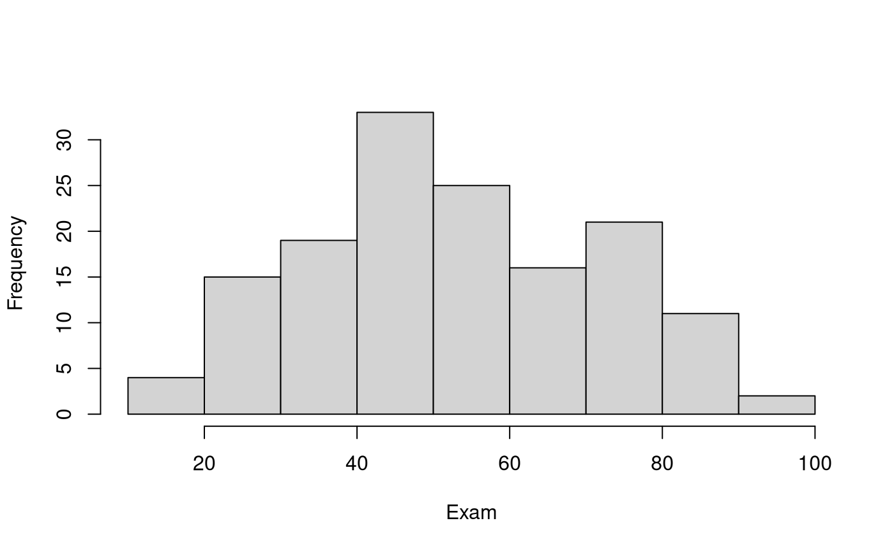

Problem
We wish to investigate the distribution of exam marks. In particular, we want to test the hypothesis that the underlying mean value of exam score is the ``historical average’’ of 55.
The variable of interest is:
-
Exam: Exam mark out of 100.
Question of Interest
We were interested in building a model to describe exam marks. In particular, we want to test the hypothesis that the underlying mean value of exam score is the ``historical average’’ of 55.
Read in and Inspect Data
Stats20x.df = read.table("STATS20x.txt", header = TRUE)
hist(Stats20x.df$Exam, xlab = "Exam", main = "")
summaryStats(Stats20x.df$Exam)
## Minimum value: 11
## Maximum value: 93
## Mean value: 52.88
## Median: 51.5
## Upper quartile: 68.5
## Lower quartile: 40
## Variance: 348.87
## Standard deviation: 18.68
## Midspread (IQR): 28.5
## Skewness: 0.16
## Number of data values: 146The exams marks are centred just above 50. The data look reasonably unimodal and symmetrical – roughly normal. Some slight right-skewness, but does not look like a problem.
Fitting the null model
By hand…
(mn_exam = mean(Stats20x.df$Exam)) # Sample mean## [1] 52.87671
(sd_exam = sd(Stats20x.df$Exam)) # Sample standard deviation## [1] 18.67799
(n_exam = length(Stats20x.df$Exam)) # Sample size## [1] 146
(tmult_exam = qt(1 - 0.05 / 2, df = n_exam - 1)) # t-multiplier## [1] 1.97646## [1] 49.82150 55.93193
(se_exam = sd_exam / sqrt(n_exam)) # Standard error## [1] 1.545802
(t_stat_exam = (mn_exam - 55) / (se_exam)) # t-stat## [1] -1.373583## [1] 0.171691Using lm…
examNull.fit55 = lm(I(Exam - 55) ~ 1, data = Stats20x.df)
(pval_exam = coef(summary(examNull.fit55))[4])## [1] 0.171691
55 + confint(examNull.fit55)## 2.5 % 97.5 %
## (Intercept) 49.8215 55.93193Finaly, with the t.test function
t.test(Stats20x.df$Exam, mu = 55)##
## One Sample t-test
##
## data: Stats20x.df$Exam
## t = -1.3736, df = 145, p-value = 0.1717
## alternative hypothesis: true mean is not equal to 55
## 95 percent confidence interval:
## 49.82150 55.93193
## sample estimates:
## mean of x
## 52.87671